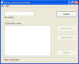

Queue Thread Display,
com.tymeac.client.jframe.TyQueThd
This frame class displays the status of a Queue's Threads.
The non-frame version of this class is TyQueThdClient, below.
 (click to link to full image)
Elements
Queue Name -- Enter the name of the Tymeac Queue.
List -- This is a List of the Queue's Threads containing:
Id - A number beginning at zero. This Id is also found
suffixed to the Thread Name, TyQueMaint,
and in the statistics for the Queue TyStats
(#_Proc'd) - The total number of requests processed.
Status - The status of the Thread: (See
also the life cycle of a thread.)
Never used -- Never activated.
/ existent -- There is a physical java thread attached.
/ null -- There is no physical java thread. Tymeac
must instantiate
a new thread when necessary.
Inactive -- The Thread was active at one time, but no longer selectable.
A threshold exception, wait-list overflow or if no thread is active in the
Queue when new work comes in must take place before the thread is
re-activated.
/ existent -- There is a physical java thread attached.
/ null -- There is no physical java
thread. Tymeac must instantiate
a new thread when necessary.
Waiting for work -- The Thread is waiting for work and is selectable.
Thread processing -- The Thread is executing code outside the application.
For instance, fetching a request from a Wait List, preparing to invoke the application
method or processing the output from the application.
In application class -- The execution is
within the invoked application.
Scheduling Output Agent -- This is an Asynchronous Request. The
Function has an Output Agent Queue. The last Queue Thread finished processing and is
now scheduling the Output Agent Queue.
Notified, awaiting execution -- The status was Waiting for work ,
above. A request found this Thread, 'notified' it, but execution has not begun. This
is a small window.
Reactivated, awaiting execution -- The status was Inactive, above.
A Threshold was exceeded, a wait-list overflow occurred or no thread was
active when new work came in (TyQueMaint.) The Thread was awakened (when
necessary, a new instance acquired) but execution has not begun. This is a small
window.
Cancelled -- The Tymeac Monitor determined that the Thread exceeded a
prudent time limit. This status has no effect on an executing Thread. When
processing is just slow, the Thread changes its own status for each event in its life.
This status effects scheduling. Reason for the cancel is:
EXCESSIVE_PROCESSING: In a thread processing state for
excessive time.
EXCESSIVE_APPL_PROCESSING_DEFAULT: In the application class state for
excessive time when no override in
time-out in the Queue.
EXCESSIVE_APPL_PROCESSING_SPECIFIC: In the application class state for
excessive time when using the override
time-out in the Queue.
EXCESSIVE_SCHD_INTERVAL: The Queue Thread is scheduling the Output Agent. In
this state for excessive time.
EXCESSIVE_POSTING_INTERVAL: The thread wait waiting for work and was
awakened. In this state for excessive time.
EXCESSIVE_STARTED_INTERVAL: No thread was attached. A new thread was started
but had not begun execution. In this state for excessive time.
See also scheduling failures.
A Thread of this status cannot participate in scheduling. The How
a Thread becomes disabled document details the time limits.
Disabled -- See How a Thread becomes disabled.
reason is: Ty0nnnn See the Tymeac Messages.
The original cancel reason, if appropriate, is as above.
Buttons
REFRESH -- Refreshes the display.
DISABLE SELECTED -- Select a Thread. This
button:
- Informs the Thread to stop processing and terminate (issue a return in the run()
method.)
- Changes the status to 'disabled'. However, this is only a logical disable.
If the Thread is "hanging", then this has no
effect on the executing Thread. In order to kill a Thread, see how a Thread is named in TyQueMaint, and use a Java tool.
Three circumstances require disabling a Thread:
During shut down, when a Thread finishes processing all pending
requests, it sets its status to "Disabled". Shut down cannot complete
(writing statistics, etc.) until all Threads finish. Manually disabling a Thread
lets shut down complete.
When a new instance of a Thread is necessary. Application
processing determines this situation. See the"Enable All" button, below.
When an application class was faulty, was repaired and renamed, and, a
new copy obtained (TyNewCopy). Now, when the actual
status of Threads is in doubt, purge all the Threads (with a java tool if necessary)
disable all Threads (here) then use the "Enable All" button, below.
Note: As above, this is a logical disable. If
the thread is scheduling an Output Agent Queue or executing within a Processing
Application Class, it may change its status at any time. Use the Refresh
button for the latest status of all threads. When the thread finishes with a request, it
then checks for a "stop processing" request.
ENABLE SELECTED -- Select a Thread. This
button:
The disabled Thread is enabled. Unlike the Enable All button below, this
button does not check for Asynchronous Requests pending.
ENABLE ALL -- All 'disabled' Threads are set to
'Inactive' and their instance reference is nulled.
When all the Threads were 'disabled' and Asynchronous Requests are pending , one Thread
is 'activated' so that any Asynchronous Requests may continue.
This button also has an affect on timed-out threads (see Cancelled status
above.) If a timed-out (Cancelled or Disabled) thread resumes processing, it
resets its status and continues. The ENABLE ALL button sets the instance
reference in the Thread Management Structure to null of all disabled threads. If the timed-out thread resumes
processing, it checks this instance reference for null. If it finds a null
reference, then the thread dies gracefully. A null reference simply means
"we've given up on you buddy and a new thread will shortly take
your place."
Message Block at bottom : -- This is an information message:
Connection failure -- The RMI connection failed or the Tymeac Server returned an
invalid message.
Selected Thread Invalid -- Cannot disable a disabled Thread.
Use Refresh First -- Cannot Enable until the list is displayed.
Queue name invalid -- As indicated.
OK -- All Threads were Enabled.
com.tymeac.client.TyQueThdClient (JavaDoc)
This is the Non-GUI equivalent of the GUI Class, above. An example of how to use this
class is: com.tymeac.demo.TyDemoClient_QueThd.java in the
<TymeacHome>source/com/tymeac/demo directory.
Constructor 1 -- has no arguments. This is for the RMI Server. The constructor gets a
new instance of a Tymeac internal class that is similar to TySvrComm
Constructor 2-- is for the internal server. The single argument is the Tymeac
Server Interface, TymeacInterface.
Instance Methods --
public int disable(String que, int nbr) {
Returns:
3 Connection failure
0 Invalid queue name
1 selected thread invalid
4 OK
Parameters: the queue name, the thread number.
public int enableSpecific(String que, int nbr) {
Returns:
3 Connection failure
0 Invalid queue name
1 selected thread invalid
4 OK
Parameters: the queue name, the thread number.
public int enable(String que) {
Returns:
1 Connection failure
3 Invalid queue name
0 OK
Parameters: the queue name.
public String[] refresh(String que) {
Returns:
String[]
When the first element = "N287", then the Queue Name was invalid.
Otherwise, a list of the Queue Threads in the above List format.
Parameters: the queue name
|
{kind=link}